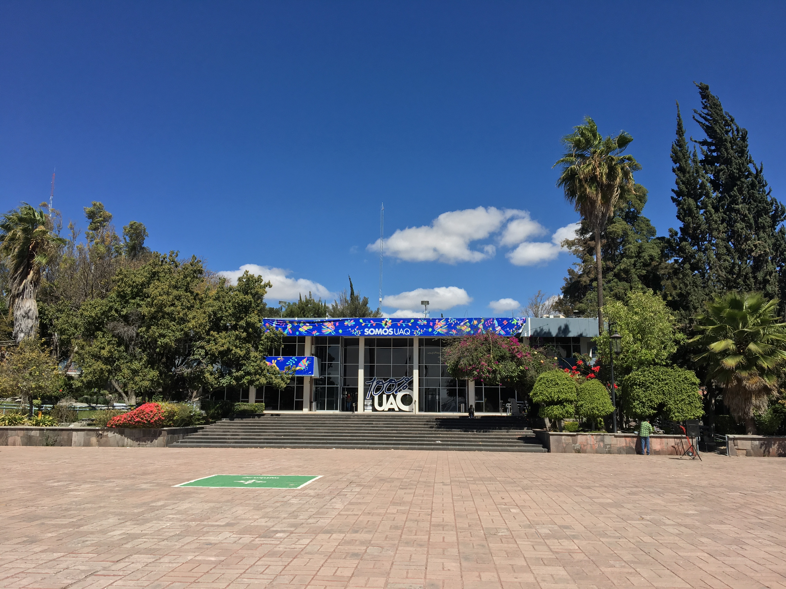

La Universidad Autónoma de Querétaro es una institución pública de educación superior del Estado de Querétaro en México. Es la más grande e importante tanto de la ciudad como del estado de Querétaro.
Fue fundada el 24 de febrero de 1951 a raíz de la clausura del Antiguo Colegio Civil, obtuvo la autonomía el 5 de febrero de 1959. Su misión es: "Participar positivamente en el desarrollo del Estado de Querétaro y del país a través de impartir educación en sus distintos tipos y modalidades del nivel medio superior y superior".
Desde 1547, estando Don Vasco de Quiroga en Europa, se había pedido al rey que enviara a los padres jesuitas a la Nueva España, Felipe II lo otorgó mediante las cédulas expedidas el 26 de marzo de 1571. El general de la compañía R.P. Francisco Borja, ordenó que el P. Pedro Sánchez junto con otros 15 sacerdotes, pasaran a América, llegando a la Nueva España el 28 de septiembre de 1572.
Hasta el 12 de marzo de 1618 se dio licencia real para que la Compañía de Jesús se estableciera en Querétaro, haciéndose efectiva tal autorización hasta el 20 de junio de 1625. Unos meses después, el 20 de agosto de 1625, se funda en Querétaro el Colegio de San Ignacio, que en 1680 estuvo a punto de estar cerrado por falta de recursos. Afortunadamente intervino el ilustre benefactor Queretano don Juan Caballero y Osio, quien reedificó desde sus cimientos la iglesia y el Colegio, al mismo tiempo que fundaba y dotaba espléndidamente al Colegio de San Francisco Javier.
Por decreto de Carlos III, en 1767, fueron expulsados los jesuitas de la Nueva España, siendo clausurados los Colegios y también la iglesia que les era anexa. Cinco años después, el 26 de septiembre de 1772, el Rey decretó la reapertura de los Colegios bajo su real patrocinio, y el virrey don José María de Bucareli designó rector al Lic. José Antonio de la Vía Santelices. Nuevamente se iniciaron las clases el 25 de febrero de 1778, con maestros como Manuel de Iturriaga, Pedro de Arce y Jacobo Pardo y Peredo.

Durante la Colonia, el más alto grado de enseñanza fue el bachillerato, por cuya causa los estudiantes pasaban a San Ildefonso, en la capital del Virreinato, para cursar Derecho y obtener su título ante los tribunales de la Real Audiencia.
A partir de 1821, los colegios quedaron desvinculados del real patrocinio, siendo considerados desde entonces como instituciones privadas y confirmadas en ese carácter por el Congreso Constituyente del Estado. En 1824 el Congreso decretó la obligación, para los Colegios de Querétaro, de jurar la observancia de la Constitución Federal y en 1825; el mismo Congreso Constituyente dio facultades al Gobierno del Estado para organizar de la mejor manera los Colegios de San Ignacio y de San Francisco Javier.
El gobernador José María Diez Marina, mediante Ley del 4 de octubre de 1827, creó la carrera de Licenciado en Derecho, cuyas clases iniciaron el 18 de octubre de ese mismo año. Los Colegios se cerraron en 1844 y se reabrieron en 1861, cerrándose definitivamente en 1867, dando paso al Colegio Civil.
Fue instituido por la ley del 27 de noviembre de 1867, cuyo proyecto fue formulado por Próspero C. Vega y puesto en vigor por el gobernador, Julio M. Cervantes. Por disposición del 4 de enero de 1876 se establecieron además de la carrera de Abogado, las de Notario Público, Farmacéutico e Ingeniero Topógrafo.
La Ley del 13 de enero de 1896, vigente durante 15 años, estuvo inspirada en el positivismo, formándose en esa doctrina Adolfo Isla, Felipe Ruíz Cabañas, Ignacio Mena, Palemón Elizondo, Francisco Gutiérrez Gelati, Francisco Hernández, Constantino Llaca, José María Truchuelo, José A. Septién y otros.
En 1910 el pueblo promovió la renuncia del gobernador Francisco González de Cosío, y los estudiantes, la de tres rectores en un solo año realizando la primera huelga en la historia del Colegio en contra del Ing. Salvador Alvarez. El gobernador Carlos M. Loyola promulgó la Ley de Instrucción Preparatoria y Profesional el 12 de marzo de 1912 vigente hasta el 27 de octubre de 1914, cuando el general Federico Montes decretó el cierre del Colegio Civil, suprimió las carreras profesionales y creó la Escuela Preparatoria de Querétaro.
Ernesto Perrurquía propició la Ley del 28 de marzo de 1918 que creaba la Escuela Libre de Derecho.
A finales de 1950 se clausuró el Colegio Civil y por iniciativa del Gobernador, Dr. Octavio S. Mondragón, se iniciaron los planes para crear la Universidad Autónoma de Querétaro. De tal proyecto se encargó el Coronel y Licenciado Juan Alvarez y, a la muerte de éste, el Lic. Fernando Díaz Ramírez. 1959 se inicia el régimen autonómico de nuestra Universidad.
El 24 de febrero de 1951 inició sus clases la Universidad Autónoma de Querétaro con la escuela Preparatoria, la escuela de Derecho y la escuela de Ingeniería; ésta última solamente con los dos primeros grados, pues el resto se cursaba en la Facultad de la UNAM.
En 1952 el Dr. Vasconcelos acuñó la frase " Educo en la Verdad y en el honor " que desde entonces es el lema y el símbolo de la Universidad Autónoma de Querétaro. En ese mismo año se crearon las escuelas de Química y Enfermería. En 1953 se fundó el Instituto de Bellas Artes y en 1954 la Escuela de Comercio, posteriormente Escuela de Contabilidad.
El gobernador, Lic. Juan C. Gorráez, nombró rector al Dr. José Alcocer Pozo y con esto estalló el llamado conflicto del 58, pidiendo los estudiantes, además del retorno del Lic. Fernando Díaz Ramírez, como rector, la autonomía de la Institución.
Efectivamente el 5 de febrero de 1959 se inicia el régimen autonómico de nuestra Universidad.
En 1963 se estableció la carrera de Licenciado en Administración de Empresas en la Escuela de Contabilidad. En 1967 se fundaron la escuela de Psicología y la escuela de Idiomas. En 1971 la Escuela de Química ofrece las opciones terminales de Química en Alimentos, Metalurgia. Química Agrícola y Farmacología.
El 8 de diciembre de 1973 la Universidad Autónoma de Querétaro transladó sus principales instalaciones al actual Centro Universitario del Cerro de las Campanas. En 1975 la escuela de Psicología también diversifica sus opciones terminales en Psicología Clínica, Laboral, Educativa y Social. En 1978 se fundó la escuela de Medicina. En 1984 la Escuela de Sociología, en 1985 la Escuela de Veterinaria y Zootecnia y en 1987 los planteles de Informática y Filosofía.
A partir de 1975 comenzaron los primeros Posgrados en las escuelas profesionales : Maestría en Ciencias y tecnología de Alimentos (Facultad de Química). En 1977 la maestría de Psicología Clínica (Facultad de Psicología) y Ciencias de la Educación (con sede en la escuela de Contabilidad y Administración), pero dependiendo de la División de Estudios Superiores, hoy Dirección de Posgrado). En 1980 la Maestría en Docencia de las Matemáticas (Con sede en la escuela de Química), después en la de ingeniería; pero también dependiendo de la División de Estudios Superiores). En 1981 se inicia la especialidad en Hidráulica que ese mismo año cambia a Maestría (Facultad de Ingeniería); y también en ese periodo, se aprueba la especialidad en Mecánica de Suelos (Facultad de Ingeniería) y las especialidades en Derecho Fiscal, Laboral y Penal (Facultad de Derecho) y las Maestrías. En 1982 se aprobó la maestría en Administración (Facultad de Contabilidad y Administración), y en 1983 maestría de Construcción (Facultad de Ingeniería); en 1984 y 1985, se autorizan las maestría en Psicología Educativa (Facultad de Psicología) y Fisiología y Anestesiología (Facultad de Medicina). En el año de 1987 son autorizadas la Maestría en Derecho Notarial, en Derecho Penitenciario (Facultad de Derecho); Maestría en Antropología y en Historia (ésta depende directamente del área de Humanidades ); Maestría en Impuestos (Facultad de Contabilidad y Administración); Maestría en Odontopediatría (Facultad de Medicina).
A partir de 1981, se iniciaron formalmente sus actividades en varios centros de investigación: Centro de Estudios Académicos sobre Contaminación Ambiental (CEACA-UAQ), 1o. de febrero de 1981 Centro de Investigaciones y Estudios- Históricos (CIEH-UAQ) y Centro de Investigaciones Sociológicas (CIS-UAQ), Centro de Estudios Lingüísticos y Literarios (CELL-UAQ) y Centro de Investigaciones y Estudios Antropológicos, entre octubre de 1981 y marzo de 1982 se erigió la Dirección de los Centros de Investigación. El Taller de Investigaciones Educativas, que desde 1979 funcionaba en la Escuela de Bachilleres, se transformó en el Centro de Investigaciones Educativas, en marzo de 1984, y , a partir de esa fecha y hasta el presente año, se han presentado y aprobado los proyectos del Centro de Investigaciones y Desarrollo Agropecuario (CIDAP-UAQ), Centro de Investigaciones en Ciencias de la Salud (CICS-UAQ) y Centro de Investigaciones básicas (CIB-UAQ).
Copyright 2022, Costas Rueda Juan Pablo, Proyecto Escolar